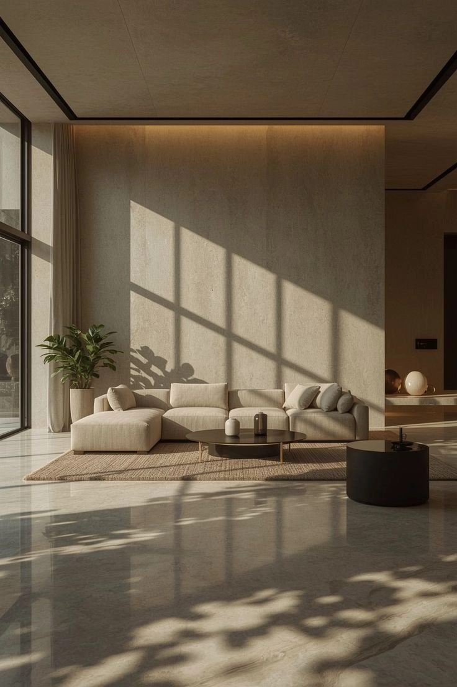
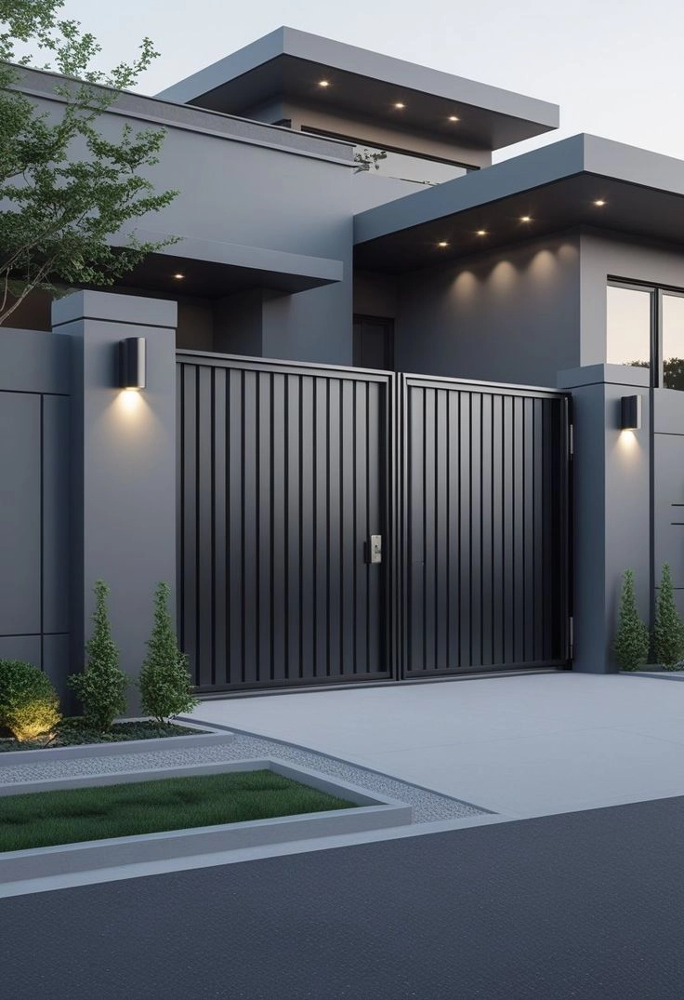

LYNQ
Journal

Why 3D Visualization Is Changing Interior Design
Sep 2 • 2026
Awareness

What Makes a 3D Render Look Real?
Sep 2 • 2026
Education
My Basic ArchViz Workflow Using Blender My Basic ArchViz Workflow Using Blender
Sep 2 • 2026
Workflow